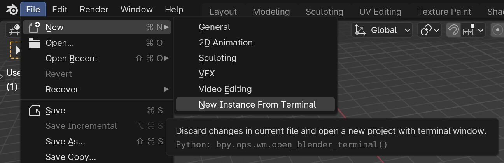
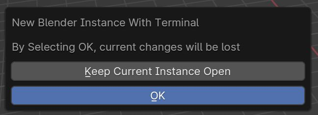
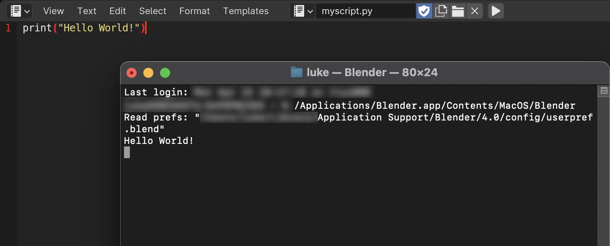

A small friction worth fixing
When developing Blender extensions on Mac, opening a useful terminal session was a repeated interruption. The tool connects Python, shell scripts, and process launching to make that workflow accessible.
Archived project
Earlier Blender tool. This is retained for old links; it is not a currently maintained release. Make Blender’s terminal output accessible on macOS for extension development and debugging.

When developing Blender extensions on Mac, opening a useful terminal session was a repeated interruption. The tool connects Python, shell scripts, and process launching to make that workflow accessible.

